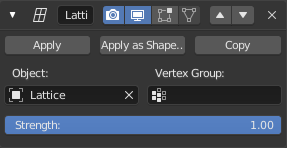

Lattice Modifier¶
The Lattice modifier deforms the base object according to the shape of a Lattice object. Objects to be deformed can be meshes, curves, surfaces, text, lattices and even particles.
Tip
A Lattice modifier can quickly be added to selected objects by parenting them using the Lattice Deform option.
Options¶

The Lattice modifier.
- Object
- The Lattice object with which to deform the base object.
- Vertex Group
- An optional vertex group name which lets you limit the modifier’s effect to a part of the base mesh.
- Strength
- A factor to control blending between original and deformed vertex positions.
Hints¶
Why would you use a lattice to deform a mesh instead of deforming the mesh itself in Edit Mode? There are a couple of reasons for that:
- If your object has a large number of vertices, it would be difficult to edit portions of it quickly in Edit Mode. Using a lattice will allow you to deform large portions efficiently.
- The smooth deformation you get from a Lattice modifier can be hard to achieve manually.
- Multiple objects can use the same lattice, thus allowing you to edit multiple objects at once.
- Like all modifiers, it is non-destructive. Meaning all changes happen on top of the original geometry, which you can still go back to and edit without affecting the deformation.
- A lattice does not affect the texture coordinates of a mesh’s surface.
Note
When using a lattice to deform particles, order in the modifier stack matters. You need to place the Lattice modifier after the Particle System one.